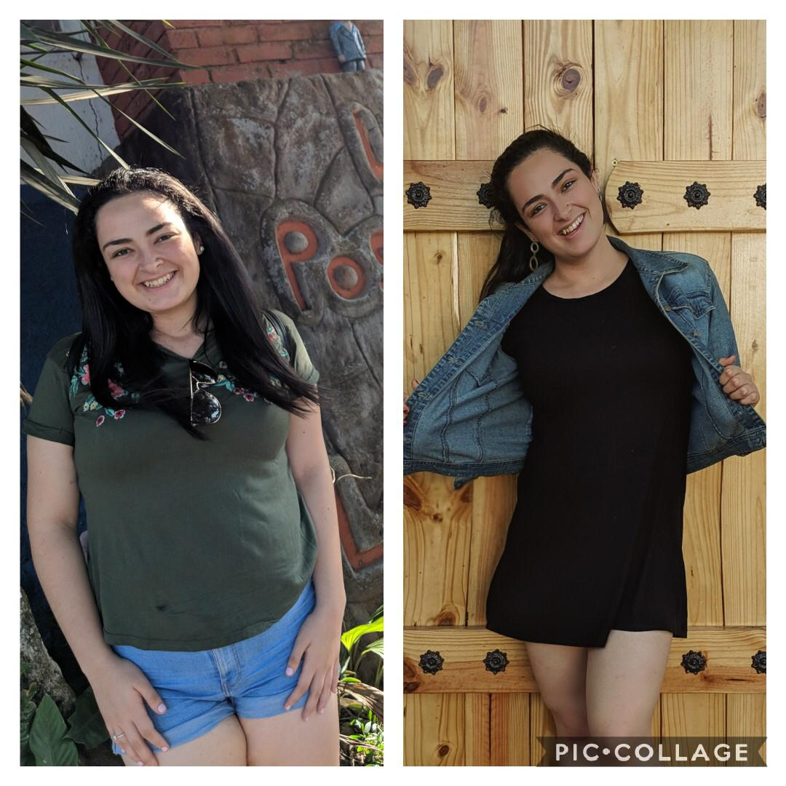

Trasformaciones y Testimonios
ANNA
Desde que hice el reto 360 con vos me sentí tan encontrada finalmente jaja. Siempre hice de todo para bajar de peso intente miles de dietas, batidos, ayunos, no comer, pastillas, bueno en fin de todo pero nada me ayudaba o lo hacía por un momento pero después era lo del rebote y regresaba a lo mismo. Cuando empecé con vos desde el principio me sentí super cómoda con tu método, desde que vi todo lo que podía comer, me encanta que puedo comer absolutamente de todo y si bajar de peso, de verdad que gracias por haberme enseñado a comer y bueno las muchas otras cosas que me enseñaste en el proceso de la bajada de peso como que el peso no es lo más importante y que si hago las cosas bien no tengo por que estresarme.
Cada vez que pasaba las semanas me enamoraba más de tu plan ya que si notaba los cambios, y te confieso que tenía mucho miedo de seguir por mi cuenta por que pensaba que iba a recaer o que iba hacer las cosas mal pero me di cuenta que ya me acostumbré a ese estilo de vida y me resulta super fácil seguirlo. Haciéndolo por mi cuenta no me ha costado, es super fácil de seguirlo, y por lo mismo que el método se adapta a la persona no es díficil de seguir. Sinceramente para mi tu método es lo mejor.